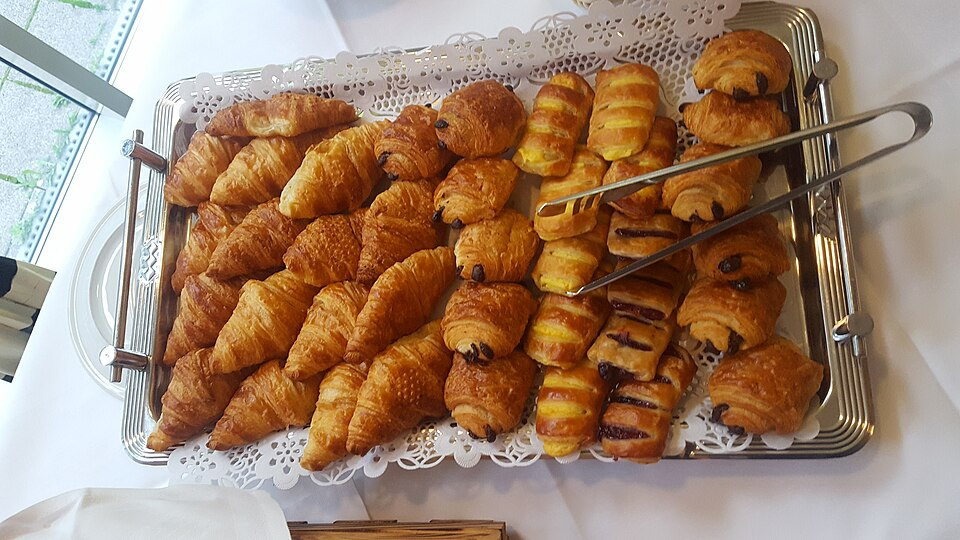

Pickup Schedule
- Tuesday – Friday: 9:30 AM – 3:00 PM (Window)
- Saturday: 8:00 AM – 12:30 PM (Uptown Market)
- Sunday – Monday: Closed for Milling & Proofing
Located along the vibrant Monroe Road corridor in Oakwold behind Common Market, Verdant Bread operates as a dedicated production bakehouse with a fast walk-up service window. Find our fresh sourdough loaves, pastries, and bread subscriptions right here or at regional weekly markets.

Address:
4410-C Monroe Rd
Charlotte, NC 28205
Behind Common Market
Phone: (704) 910-1845
Production Bakery: Our bakehouse features a walk-up ordering window. There is no indoor dining room seating; outdoor courtyard seating is available nearby.
What to expect when visiting Verdant Bread on Monroe Road:


Find Verdant Bread throughout the greater Charlotte region: